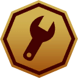

Map3 pickups
The numbers are the # of the list below: hover a pin for its name, click it to jump to it. Open the full map shows only this type on the interactive map; the coordinates in the list open it on that pickup.
All equipment schematics
Nearest location is the closest named place and how far and in which direction the pickup lies from it. Click a header to sort.
| # | Name | Region | Nearest location | Map (x, z) |
|---|---|---|---|---|
| 1 | Equipment Schematic Point | Mountains | 286 m SW of Beredskapsförråd 104 | -2691, -724 |
| 2 | Equipment Schematic Point | Marshlands | 137 m NE of Stenmyra | -748, -4448 |
| 3 | Equipment Schematic Point | Archipelago | at Seggesta Farm | 1186, 3364 |
What the points buy22 schematics

Equipment Schematic Points. The game's own text: Acquired by crafting equipment or found as loot when exploring the world.The equipment tree has 22 schematics (22 ranks); buying every rank costs 629 Equipment Schematic Points. See the schematics page for the cost of each rank, recipes and prerequisites.
| Schematic | Ranks | Total cost |
|---|---|---|
| Simple First Aid Kit | 1 | 1 |
| Explosive Gas Tank | 1 | 1 |
| Grenade | 1 | 5 |
| Compressed Air Tank | 1 | 10 |
| Smoke Grenade | 1 | 20 |
| Poison Gas Tank | 1 | 40 |
| Land Mine | 1 | 80 |
| Field Radio | 1 | 1 |
| Lockpick Hairpin | 1 | 5 |
| Standard First Aid Kit | 1 | 10 |
| Ammo Pack | 1 | 20 |
| Advanced First Aid Kit | 1 | 40 |
| Paramedic Response Pack | 1 | 80 |
| Radio | 1 | 1 |
| Emergency flare | 1 | 5 |
| Car Battery EMP | 1 | 10 |
| Firework | 1 | 20 |
| Boombox | 1 | 40 |
| Emergency Flare (Sticky) | 1 | 80 |
| Adrenaline Shot | 1 | 160 |
| Gasoline | 1 | 0 |
| Repair Kit | 1 | 0 |